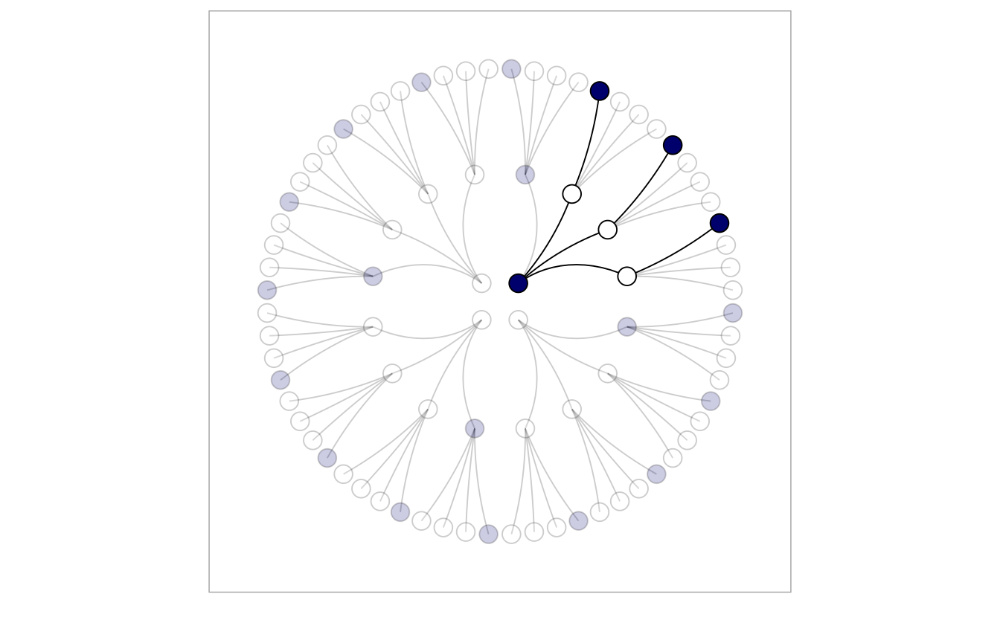

Kapitel 5 Bayes
5.1 Lernsteuerung
5.2 Kleine Welt, große Welt
5.2.2 Kleine Welt vs. große Welt
5.2.2.2 Große Welt
- Die Welt, wie sie in Wirklichkeit ist
- entspricht nicht (zwangsläufig) dem Modell
Behaims Globus ist nicht gleich der Erde. Die kleine Welt ist nicht die große Welt.
Was in der kleinen Welt funktioniert, muss nicht in der großen Welt funktionieren. Modelle zeigen immer nur die kleine Welt: Vorsicht vor schnellen Schlüssen und vermeintlicher Gewissheit.
üèã Nennen Sie ein Beispiel, in dem ein Modell nicht (exakt) der Wirklichkeit entspricht!
5.3 Bayes-Statistik als Zählen
5.3.1 Murmeln im Säckchen
Sie haben ein Säckchen mit vier Murmeln darin.
Sie wissen nicht, welche Farben die Murmeln haben.
Murmeln gibt’s in zwei Farben: weiß (W) oder blau (B).
Es gibt daher fünf Hypothesen zur Farbe der Murmeln im Säckchen: [WWWW], [BWWW], [BBWW], [BBBW], [BBBB.]
Unser Ziel ist, die Wahrscheinlichkeiten der Hypothesen nach Ziehen von Murmeln zu bestimmen.
5.3.2 Unsere Daten
Wir ziehen eine Murmel, merken uns die Farbe und legen sie zurück. Das wiederholen wir noch zwei Mal (Ziehen mit Zurücklegen).
Wir erhalten: BWB. Voilà: unsere Daten.
üèã Wie gro√ü ist die Stichprobe (\(N\))? Ist die Wahrscheinlichkeit f√ºr B in jedem Zug gleich?
5.3.3 Zugmöglichkeiten laut Hypothese [BWWW], 1. Zug
Wenn Hypothese [BWWW] der Fall sein sollte, dann können wir im ersten Zug entweder die eine blaue Murmel erwischen oder eine der drei weißen.

Nachdem wir die Murmel gezogen haben (und die Farbe gemerkt haben), legen wir sie wieder ins Säckchen: Ziehen mit Zurücklegen.
üèã Wie viele Elementarereignisse hat dieses Zufallsexperiment? Sind alle gleich wahrscheinlich?
5.3.4 Zugmöglichkeiten laut Hypothese [BWWW], 1. und 2. Zug
Wenn Hypothese [BWWW] der Fall sein sollte, dann haben wir im zweiten Zug natürlich die gleichen Möglichkeiten wie im ersten.
Zug 1 und Zug 2 zusammen genommen gibt es \(16=4\cdot4=4^2\) Kombinationen an gezogenen Murmeln:
üèã Ist jedes Elementarereignis (z.B. BB, BW,‚Ķ) gleich wahrscheinlich?
5.3.5 Zugmöglichkeiten laut Hypothese [BWWW], 1.-3. Zug
Zug 1, Zug 2 und Zug 3 zusammen genommen, gibt es dann \(4\cdot4\cdot4=4^3=64\) Kombinationen, drei Murmeln zu ziehen.
üèã Wie wahrscheinlich ist ein bestimmtes dieser 64 Ereignisse (unter der Annahme gleicher Wahrscheinlichkeit)?
5.3.6 Welche Züge sind logisch möglich?
- Einige Kombinationen (“Pfade”) der Hypothese [BWWW] lassen sich nicht mit unseren Daten (BWB) vereinbaren.
- Z.B. alle Kombinationen die mit W beginnen, sind nicht mit unseren Daten zu vereinbaren.

Nur 3 der 64 “Pfade” (Kombinationen), die Hypothese [BWWW] vorgibt, sind mit unseren Daten logisch zu vereinbaren.
5.3.7 Kombinationen für Hypothesen
| Hypothese | Häufigkeit BWB |
|---|---|
| [W W W W] | 0 * 4 * 0 = 0 |
| [B W W W] | 1 * 3 * 1 = 3 |
| [B B W W] | 2 * 2 * 2 = 8 |
| [B B B W] | 3 * 1 * 3 = 9 |
| [B B B B] | 4 * 0 * 4 = 0 |
Die Häufigkeiten der Kombinationen (Pfade) ist proportional zur Plausibilität einer Hypothese: Je mehr Pfade laut Hypothese, desto wahrscheinlicher die Hypothese (unter sonst gleichen Bedingungen).
Zusätzlich müssten wir noch beachten, ob bestimmte Hypothesen per se bzw. a priori wahrscheinlicher sind. So könnten blaue Murmeln selten sein. Gehen wir der Einfachheit halber zunächst davon aus, dass alle Hypothesen apriori gleich wahrscheinlich sind.

{kind=link}
5.3.9 Wir ziehen einer vierte Murmel: B
- Gehen wir zunächst davon aus, dass alle Hypothesen apriori gleich wahrscheinlich sind.
- Wir ziehen wieder eine Murmel. Sie ist blau (B)!
- Jetzt könnten wir den Pfadbaum für vier (statt drei) Züge aufmalen.
- Oder wir machen ein Update: Wir aktualisieren die bisherigen Kombinationshäufigkeiten um die neuen Daten. Die alten Daten dienen dabei als Priori-Informationen für die neuen Daten.
5.3.10 Priori-Information nutzen
Mit den Daten BWBB ist die Hypothese [BBBW] am wahrscheinlichsten:
| Hyp | PB | HA | HN |
|---|---|---|---|
| [W W W W] | 0 | 0 | 0 * 0 = 0 |
| [B W W W] | 1 | 3 | 1 * 3 = 3 |
| [B B W W] | 2 | 8 | 2 * 8 = 16 |
| [B B B W] | 3 | 9 | 3 * 9 = 27 |
| [B B B B] | 4 | 0 | 4 * 0 = 0 |
Hyp: Hypothese
PB: Anzahl von Pfaden für B
HA: alte (bisherige) Häufigkeiten
HN: neue (geupdatete) Häufigkeiten
5.3.11 Murmelfabrik streikt: Blaue Murmeln jetzt sehr selten!
Berücksichtigen wir jetzt die Information, dass apriori (bevor wir die Daten gesehen haben), einige Hypothesen wahrscheinlicher (plausibler) sind als andere.
Hier ist die Hypothese [BBWW] am wahrscheinlichsten:
| Hyp | HA | HF | HN |
|---|---|---|---|
| [W W W W] | 0 | 0 | 0 * 0 = 0 |
| [B W W W] | 3 | 3 | 3 * 3 = 9 |
| [B B W W] | 16 | 2 | 16 * 2 = 32 |
| [B B B W] | 27 | 1 | 27 * 1 = 27 |
| [B B B B] | 0 | 0 | 0 * 0 = 0 |
HF: Häufigkeit des Säckchentyps laut Fabrik.
5.3.12 Zählen mit großen Zahlen nervt
Malen Sie mal den Pfadbaum für 10 Züge …
Eine Umrechnung der Häufigkeiten in Anteile macht das Rechnen einfacher.
Dazu definieren wir die geupdatete Plausibilität einer Hypothese nach Kenntnis der Daten:
\[\text{Plausibilität von [BWWW] nach Kenntnis von BWB}\] \[\propto\] \[\text{Anzahl möglicher Pfade bei [BWWW] für BWB}\] \[\times\] \[\text{Priori-Plausibilität von [BWWW]}\]
- \(\propto\): proportional zu
5.3.13 Plausibilität berechnen
- Sei \(p\) der Anteil blauer Murmeln. Bei Hypothese [BWWW] gilt, dann ist \(p=1/4 = 0.25\). Sei \(D_{neu} =\) BWB, die Daten:
\[\text{Plausibilität von }p\text{ nach Kenntnis von }D_{neu}\] \[\propto\] \[\text{Anzahl Pfade von }p\text{ für }D_{neu}\] \[\times\] \[\text{Priori-Plausibilität von }p\]
Für jeden Wert von \(p\) beurteilen wir dessen Plausibilität als umso höher, je mehr Pfade durch den Pfadbaum führen und je höher die Plausibilität des Werts von \(p\) von vornherein ist.
5.3.14 Von Plausibilität zur Wahrscheinlichkeit
- Teilen wir die Anzahl Pfade einer Hypothese durch die Anzahl aller Pfade (aller Hypothesen), so bekommen wir einen Anteil. Damit haben wir eine Wahrscheinlichkeit:
\[\text{Pl von }p\text{ mit Daten }D_{neu} =\] \[\frac{\text{Anzahl Pfade von }p\text{ für }D_{neu}\times \text{Prior-Pl von }p}{\text{Summe aller Pfade}}\]
Pl: Plausibilität
üèã Was muss passieren, dass der Bruch gleich Null ist?
5.3.15 Plausibilität pro Hypothese
| Hyp | p | AP | Pl |
|---|---|---|---|
| [W W W W] | 0.00 | 0 | 0.00 |
| [B W W W] | 0.25 | 3 | 0.15 |
| [B B W W] | 0.50 | 8 | 0.40 |
| [B B B W] | 0.75 | 9 | 0.45 |
| [B B B B] | 1.00 | 0 | 0.00 |
p: Anteil blauer Murmeln (Priori-Wissen)
AP: Anzahl von möglichen Pfaden; Pl: Plausibilität
## [1] 0.00 0.15 0.40 0.45 0.005.3.16 Fachbegriffe
Kennwerte laut einer Hypothese, wie den Anteil blauer Murmeln \(p\) bezeichnet man als Parameter.
Den Anteil gültiger Pfade pro Hypothese (bzw. pro Wert von \(p\)) bezeichnet man als Likelihood.
Die Priori-Plausibilität nennt man Priori-Wahrscheinlichkeit.
Die neue, geupdatete Plausibilität für einen bestimmten Wert von \(p\) nennt man Posteriori-Wahrscheinlichkeit.
üèã Erkl√§ren Sie die Begriffe dem n√§chsten Menschen, den Sie treffen!
5.3.17 Zusammenfassung
Schritt: Unser Vorab-Wissen zur Wahrscheinlichkeit jeder Hypothese wird mit dem Begriff Priori-Verteilung gefasst.
Schritt: Wir zählen den Anteil gültiger Pfade für jede Hypothese; d.h. wir berechnen den Likelihood jeder Hypothese.
Schritt: Mit den Likelihoods updaten wir unsere Priori-Verteilung. Die Wahrscheinlichkeit jeder Hypothese verändert sich entsprechend der Daten. Es resultiert die Posteriori-Verteilung.
5.4 Ein erstes Modell
5.4.1 Welcher Anteil der Erdoberfläche ist mit Wasser bedeckt?

Quelle CC 4.0 BY-NC
Sie werden einen Globus-Ball in die Luft und fangen in wieder auf. Sie notieren dann, ob die Stelle unter Ihrem Zeigefinger Wasser zeigt (W) oder Land (L). Den Versuch wiederholen Sie 9 Mal.
\[W \quad L \quad W \quad W \quad W \quad L \quad W \quad L \quad W\]
üèã Besorgen Sie sich einen Globus (zur Not eine M√ºnze) und stellen Sie den Versuch nach!
5.5 Der datengenierende Prozess: Wie entstanden die Daten?
- Der wahre Anteil von Wasser der Erdoberfläche ist \(p\).
- Ein Wurf des Globusballes hat die Wahrscheinlichkeit \(p\), eine \(W\)-Beobachtung zu erzeugen.
- Die Würfe des Globusballes sind unabhängig voneinander.
- Wir haben kein Vorwissen über \(p\); jeder Wert ist uns gleich wahrscheinlich.
üèã Welche Annahmen w√ºrden Sie √§ndern? Welche k√∂nnte man wegnehmen? Welche hinzuf√ºgen? Was w√§ren die Konsequenzen?
5.5.2 Erinnern wir uns an das Urnen-Beispiel
Für jede Hypothese haben wir ein Vorab-Wissen, das die jeweilige Plausibilität der Hypothese angibt: Priori-Verteilung.
Für jede Hypothese (d.h. jeden Parameterwert \(p\)) möchten wir den Anteil (die Wahrscheinlichkeit) gültiger Kombinationen wissen. Das gibt uns den Likelihood.
Dann gewichten wir den Likelihood mit dem Vorabwissen, so dass wir die Posteriori-Verteilung4 bekommen.

5.5.3 Die Binomialverteilung
Wir nehmen an, dass die Daten unabhängig voneinander entstehen und sich der Parameterwert nicht zwischenzeitlich ändert.
Dann kann man die Wahrscheinlichkeit (\(Pr\)), \(W\) mal Wasser und \(L\) mal Land zu beobachten, wenn die Wahrscheinlichkeit für Wasser \(p\) beträgt, mit der Binomialverteilung berechnen.
Die Binomialverteilung zeigt die Verteilung der Häufigkeit (Wahrscheinlichkeit) der Ereignisse (z.B. 2 Mal Kopf) beim wiederholten Münzwurf (und allen vergleichbaren Zufallsexperimenten)5.
\[Pr(W,L|p) = \frac{(W+L)!}{W!L!}p^W(1-p)^L\]
5.5.4 Binomialverteilung mit R
Was ist der Anteil der gültigen Pfade (Wahrscheinlichkeit), um 6 mal \(W\) bei \(N=W+L=9\) Würfen zu bekommen, wenn wir von \(p=1/2\) ausgehen?
dbinom(x = 6, size = 9, prob = 1/2)## [1] 0.1640625Was ist die Wahrscheinlichkeit für \(W=9\) bei \(N=9\) und \(p=1/2\)?
dbinom(x = 9, size = 9, prob = 1/2)## [1] 0.0019531255.5.5 Beispiele zur Berechnung einer binomial verteilten Wahrscheinlichkeit
Ei Professori stellt einen Klausur mit 20 Richtig-Falsch-Fragen. Wie groß ist die Wahrscheinlichkeit, durch bloßes Münze werfen genau 15 Fragen richtig zu raten?6
dbinom(x = 15, size = 20, prob = .5)## [1] 0.01478577Was ist die Wahrscheinlichkeit bei 3 Münzwürfen (genau) 3 Treffer (Kopf) zu erzielen?
dbinom(3, 3, 1/2)## [1] 0.1255.5.6 Unser Modell ist geboren
Wir fassen das Globusmodell so zusammen:
\[W \sim \text{Bin}(N,p),\]
Lies: “W ist binomial verteilt mit den Parametern \(N\) und \(p\)”. \(N\) gibt die Anzahl der Globuswürfe an: \(N=W+L\).
Unser Vorab-Wissen zu \(p\) sei, dass uns alle Werte gleich plausibel erscheinen (“uniform”):
\[p \sim \text{Unif}(0,1).\]
Lies: “\(p\) ist gleich (uniform) verteilt mit der Untergrenze 0 und der Obergrenze 1”.
5.5.8 Herleitung Bayes’ Theorem 1/2: Gemeinsame Wahrscheinlichkeit
Die Wahrscheinlichkeit für Regen und kalt ist gleich der Wahrscheinlihckeit von Regen, gegeben kalt mal der Wahrscheinlicht von kalt. Entsprechend gilt: Die Wahrscheinlichkeit von \(W\), \(L\) und \(p\) ist das Produkt von \(Pr(W,L|p)\) und der Prior-Wahrscheinlichkeit \(Pr(p)\):
\[Pr(W,L,p) = Pr(W,L|p) \cdot Pr(p)\]
Genauso gilt: Die Wahrscheinlichkeit von Regen und kalt ist gleich der Wahrscheinlichkeit kalt, wenn’s regnet mal der Wahrscheinlichkeit von Regen:
\[Pr(W,L,p) = Pr(p|W,L) \cdot Pr(W, L)\]
5.5.9 Herleitung Bayes’ Theorem 2/2: Posteriori-Wahrscheinlichkeit
Wir setzen die letzten beiden Gleichungen gleich:
\[Pr(W,L|p) \cdot Pr(p) = Pr(p|W,L) \cdot (W,L)\]
Und lösen auf nach der Posteriori-Wahrscheinlichkeit, \(Pr(p|W,L)\):
\[Pr(p|W,L) = \frac{Pr(W,L|p) Pr(p)}{Pr(W,L)}\]
\(Pr(W,L)\) nennt man die mittlere Wahrscheinlichkeit der Daten oder Evidenz. Die Evidenz berechnet sich als Mittelwert der Likelihoods über alle Werte von \(p\). Die Aufgabe dieser Größe ist nur dafür zu sorgen, dass insgesamt Werte zwischen 0 und 1 herauskommen.
5.5.10 Bayes’ Theorem
-
Bestandteile:
Posteriori-Wahrscheinlichkeit: \(Pr_{Post} := Pr(H|D)\)
Likelihood: \(L := Pr(D|H)\)
Priori-Wahrscheinlichkeit: \(Pr_{Priori} := Pr(H)\)
Evidenz: \(E := Pr(D)\)
Bayes’ Theorem gibt die \(Pr_{Post}\) an, wenn man die Gleichung mit der \(Pr_{Priori}\) und dem \(L\) füttert.
Bayes’ Theorem wird häufig verwendet, um die \(Pr_{Post}\) zu quantifizieren.
Die \(Pr_{Post}\) ist proportional zu \(L \times Pr_{Priori}\).
5.6 Bayes berechnen mit R
5.6.1 Die Methode Gitter-Annäherung7
- Teile den Wertebereich des Parameter in ein “Gitter” auf, z.B. \(0.1, 0.2, ..., 0.9, 1\) (“Gitterwerte”).
- Bestimme den Priori-Wert des Parameters für jeden Gitterwert.
- Berechne den Likelihood für Gitterwert.
- Berechne den unstandardisierten Posteriori-Wert für jeden Gitterwert (Produkt von Priori und Likelihood).
- Standardisiere den Posteriori-Wert durch teilen anhand der Summe alle unstand. Posteriori-Werte.
5.6.2 Gitterwerte in R berechnen
d <-
tibble(
# definiere das Gitter:
p_Gitter = seq(from = 0, to = 1, length.out = 10),
# bestimme den Priori-Wert:
Priori = 1) %>%
mutate(
# berechne Likelihood für jeden Gitterwert:
Likelihood = dbinom(6, size = 9, prob = p_Gitter),
# berechen unstand. Posteriori-Werte:
unstd_Post = Likelihood * Priori,
# berechne stand. Posteriori-Werte (summiert zu 1):
Post = unstd_Post / sum(unstd_Post)) 5.6.3 Unsere Gitter-Daten
| p_Gitter | Priori | Likelihood | unstd_Post | Post |
|---|---|---|---|---|
| 0.00 | 1 | 0.00 | 0.00 | 0.00 |
| 0.11 | 1 | 0.00 | 0.00 | 0.00 |
| 0.22 | 1 | 0.00 | 0.00 | 0.01 |
| 0.33 | 1 | 0.03 | 0.03 | 0.04 |
| 0.44 | 1 | 0.11 | 0.11 | 0.12 |
| 0.56 | 1 | 0.22 | 0.22 | 0.24 |
| 0.67 | 1 | 0.27 | 0.27 | 0.30 |
| 0.78 | 1 | 0.20 | 0.20 | 0.23 |
| 0.89 | 1 | 0.06 | 0.06 | 0.06 |
| 1.00 | 1 | 0.00 | 0.00 | 0.00 |
üèã Was wohl mit Post passiert, wenn wir Priori √§ndern?
5.6.4 \(Pr_{Post}\) zeigt, wie plausibel wir jeden Wert von \(p\) halten

Mehr Gitterwerte glätten die Annäherung.
5.6.5 Je größer die Stichprobe (\(N\)), desto zuverlässiger wird unsere Berechnung
Grau: Quadratische Anpassung; schwarz: wahre Verteilung
5.6.6 Zusammenfassung
In unserem Modell haben wir Annahmen zu \(Pr_{Priori}\) und \(L\) getroffen.
Auf dieser Basis hat der Golem sein Wissen geupdated zu \(Pr_{Post}\).
Mit der Gitter-Methode haben wir viele Hypothesen (Parameterwerte) untersucht und jeweils die \(Pr_{Post}\) berechnet.
Unser Modell bildet die kleine Welt ab; ob es in der großen Welt nützlich ist, steht auf einem anderen Blatt.
üèã Wenn Sie auf einen Prozentwert f√ºr \(W\) tippen m√ºssten, welchen w√ºrden Sie nehmen, laut dem Modell (und gegeben der Daten)?